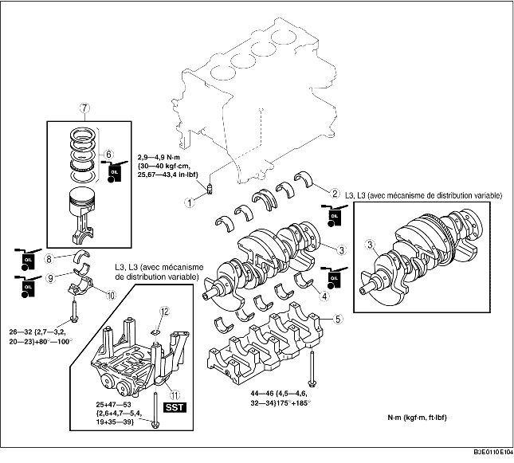

1. Remonter dans l'ordre indiqué par le tableau.

.
|
1
|
Soupape de gicleur d'huile
|
|
2
|
Roulement principal supérieur, roulement de poussée
|
|
3
|
Vilebrequin
|
|
4
|
Roulement principal inférieur, roulement de poussée
|
|
5
|
Bouchon de roulement principal
(voir la section Note sur le remontage de bouchon de roulement principal.)
|
|
6
|
Bague de piston
(voir la section Note sur le remontage de bague de piston.)
|
|
7
|
Remontage de bielle, piston
(voir la section Note sur le remontage de piston)
|
|
8
|
Coussinet de bielle supérieur
(voir la section Note sur le montage des coussinets de bielle)
|
|
9
|
Coussinet de bielle inférieur
(voir la section Note sur le montage des coussinets de bielle)
|
|
10
|
Bouchon de bielle
(voir la section Note sur le montage du bouchon de bielle)
|
|
11
|
Equilibreuse de moteur (L3 (avec mécanisme de distribution variable))
(voir la section Note sur le remontage d'unité d'équilibrage)
|
|
12
|
Cale de réglage
|
1. Reposer les chapeaux du palier principal dans l'ordre indiqué par la figure.
1. Reposer les deux segments de commande d'huile et l'entretoise.
2. Vérifier que le deuxième segment est installé avec le côté racleur vers le bas.
3. Vérifier que le segment supérieur est installé avec le côté racleur vers l'intérieur ou vers le haut.
1. Positionner l'ouverture de chaque segment comme indiqué sur la figure.
2. Insérer le piston et la bielle dans le cylindre, flèche vers l'avant du moteur.
1. Reposer le coussinet de bielle sur la bielle et les chapeaux de bielle, comme indiqué sur la figure.
1. Serrer les boulons de bielle en deux étapes, à l'aide de l'outil SST (49 D032 316).
1. S'assurer par inspection visuelle que la transmission de l'unité d'équilibrage n'est pas endommagée et vérifier que l'arbre tourne régulièrement.
2. Placer l'outil SST comme indiqué dans l'illustration.
3. Faire tourner le vilebrequin dans le sens horloger ; le vilebrequin est dans la position PMH du cylindre N° 1 (jusqu'à ce que le contrepoids soit attaché à l'outil SST).
4. Placer la cale de réglage sur la face de siège de l'unité d'équilibrage.
5. Une fois les repères de l'unité d'équilibrage exactement au centre, monter l'unité sur le bloc-cylindres.
6. Placer l' outil SST comme indiqué, puis mesurer le jeu d'entredent à l'aide d'un comparateur à cadran.

Tableau de sélection des cales de réglage